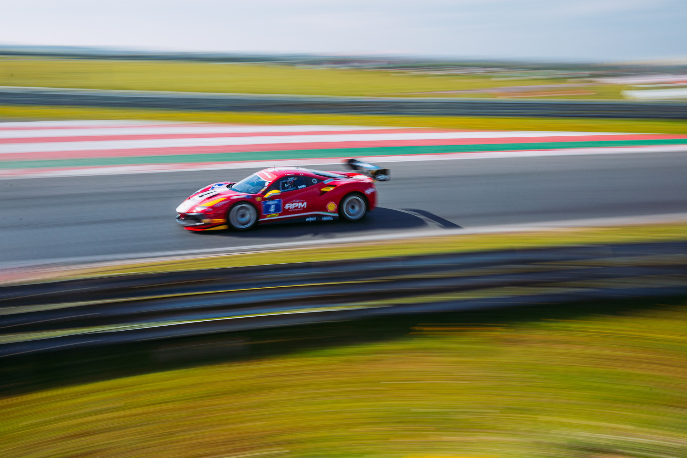
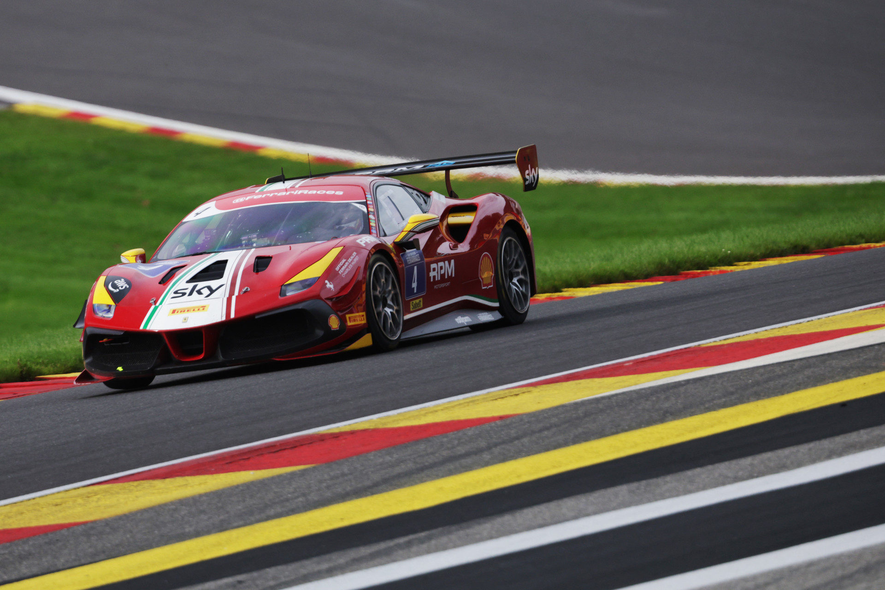

MORROW CROWNS BRILLIANT SEASON WITH TITLE WIN
Andrew Morrow celebrated the British title of the Ferrari Challenge Trofeo Pirelli at the end of a thrilling race on European soil at the iconic Spa-Francorchamps circuit, which hosted the final round in September 2023.
Finishing second under the chequered flag in the final race of the season meant Morrow clinched the British title in his first full season in the Prancing Horse's one-make series. “It couldn't have gone any better,” commented the newly crowned champion at the end of the event at the historic circuit in the Ardennes forest, “because before the start of the last race, we honestly did not know if the championship was still within our grasp. I am delighted with the result.”
For the young Northern Irishman, it is a win that was born a year and a half ago when, after obtaining his racing licence, Morrow got behind the wheel of the Ferrari 488 Challenge Evo in the British series, achieving a victory in 2022 at the second race held at the Snetterton circuit. Since then, his journey has been marked by a steady improvement, which has seen the Charles Hurst driver climb the top step of the podium three times in the 2023 races. Among these, he secured the “Grand Slam” at the inaugural round at Snetterton – pole position, fastest lap and victory, leading from start to finish over the course of a single weekend – a prestigious result that Morrow delivered in both Race-1 and Race-2.
For Morrow, it was the best possible start to a 2023 season that has seen him climbing the podium no fewer than 10 times, finishing every race in the top-3. “The Ferrari 488 Challenge Evo is a fantastic car and the Ferrari Challenge UK is a great big family,” says Morrow, hailing his triumphant season.
 